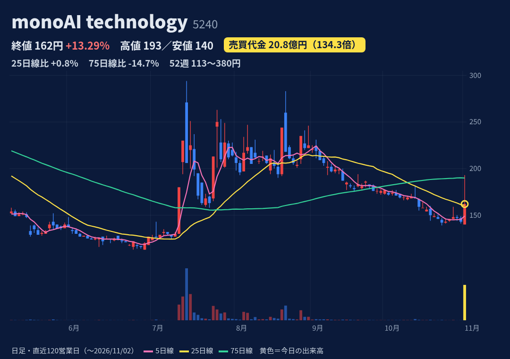
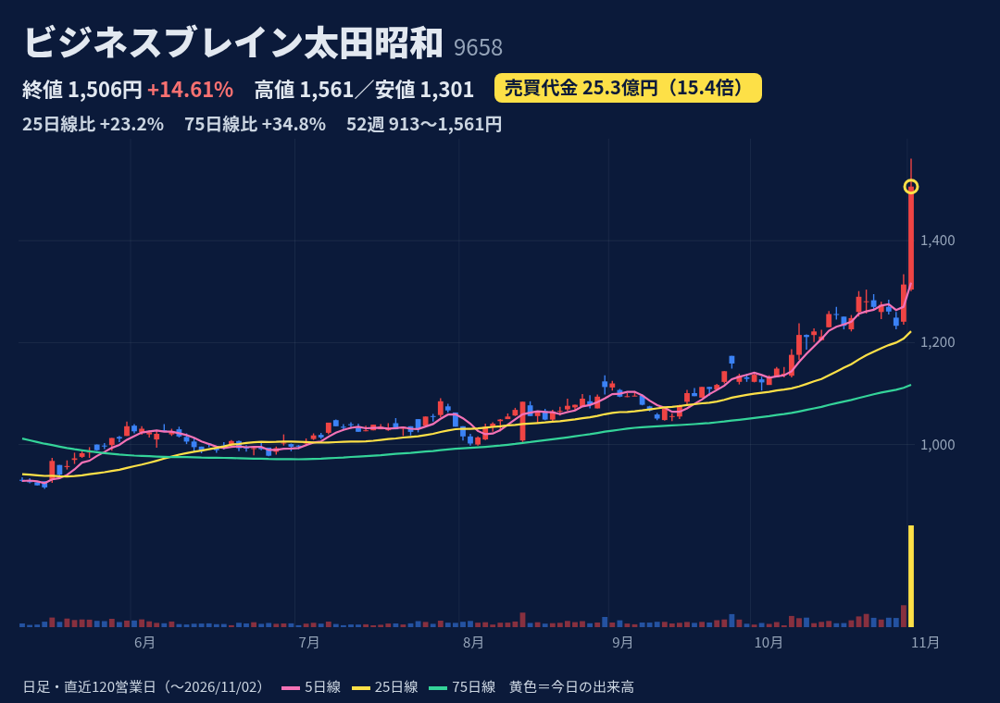
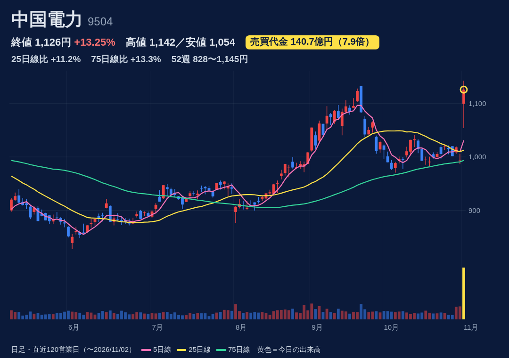
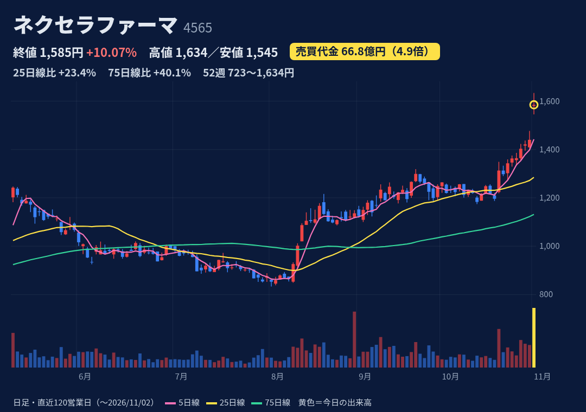
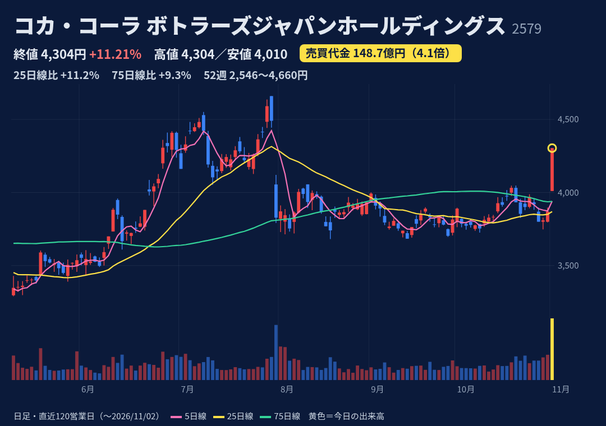
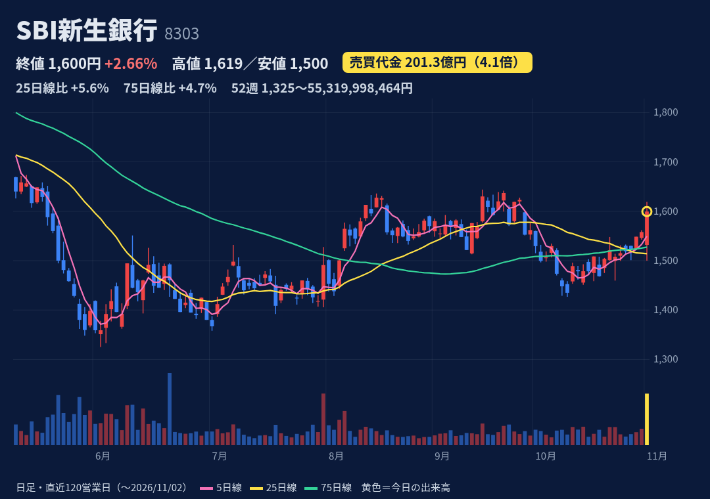

XR・メタバース基盤「XR CLOUD」とAIエージェント「monoAI Agent」。2026年8月にフィジカルAI（ロボット）事業への参入を発表。
TDnet・株探で10/30〜11/2の開示・個別ニュースなし。株探のS高一覧では「一時S高・人工知能関連」とだけ記載。材料は確認できず。8月のフィジカルAI参入などAI関連の連想は推測。
1-6月 売上2.68億円(-58%)、営業赤字2.69億円。通期予想 売上8.58億円(-12%)・営業赤字2.67億円。3Q決算は11/13予定（株探）。
始値140→11:19 S高193→終値162（陽線だが高値から-16%、VWAP約181円）。52週高値380・安値113で位置18%。25日線+1%、75日線-15%。25/12・26/7にも売買代金50倍超の急騰後、数日〜2週で急落した前例。
買残97.3万株・売残12.3万株・倍率7.93倍（10/23）。日証金が11/4から申込停止（新規売り・現引き）＝売り禁。JPX日々公表・増担保は該当なし（JPX 10/30更新分。11/2夕方の更新は未確認）
時価総額約20億円・株価100円台の低位小型株。決算短信に「継続企業の前提に関する重要事象等」の記載（会社は重要な不確実性なしと判断）。新株予約権あり。売り禁で需給がゆがみやすい。

経営・ITコンサルとシステム開発の受託が主力。会計システムに強く、BPO事業にも注力。
10/30 20:00開示。持分法会社GSX(4417)へのアクセンチュアのTOB(1株8,500円)成立後、保有約40%(600.6万株)をGSXの自社株買い(1株5,835円)で譲渡。売却益約170.5億円を計上見込み（業績予想は未修正）。
1Q(4-6月) 売上収益105億円(+4.6%)、営業利益3.0億円(-54%)。通期予想 売上436億円(+3.6%)・営業34.3億円(+5.2%)、1Q進捗9%。2Q決算は11/13予定（株探）。
始値1,304→13:47高値1,561→終値1,506（陽線・上ヒゲ小）。52週高値を更新（安値913・26/5）。25日線+23%、75日線+35%と上方乖離が大きい。25/11/4にも+16.7%の急騰後、5日で-3.5%。
制度信用のみ（貸借銘柄ではなく空売りしにくい）。買残19.7万株・売残1.1千株・倍率179倍（10/23）。JPX日々公表・増担保は該当なし（JPX 10/30更新分。11/2夕方の更新は未確認）
売却益は一過性。TOB成立が前提で、GSXの自社株取得は27年3月予定と時期が未確定。本業は1Qで営業益が半減。移動平均線からの乖離が大きい。

中国地方の電力会社。瀬戸内に電源が集中し石炭火力の比率が高い。島根原発3号機を建設中。
10/30 15:30開示。通期経常を400→380億円に下方修正。一方、中電工(1941)の自社株TOBに630万株を応募（1株4,614円・約291億円）し特別利益を計上見込み→最終310→350億円に上方修正、年間配当30→40円に増額。
上期 売上7,919億円(+9%)、営業損益48億円の赤字（前年909億円の黒字）。通期予想 売上1.63兆円・営業430億円(-52%)・最終350億円(-49%)。次回決算日は未確認。
始値1,099.5（窓を開けて始まる）→高値1,142.5→終値1,126（陽線・上ヒゲ小）。52週高値1,145(26/2/19)まであと少し（位置94%）。25日線+11%、75日線+13%。過去1年で売買代金3倍超はこれを含め4回だけ。
買残259万株・売残8.2万株・倍率31.6倍（10/23、買残は増加傾向）。JPX日々公表・増担保は該当なし（JPX 10/30更新分。11/2夕方の更新は未確認）
本業は燃料費調整の期ずれ差損で大幅減益、上期は赤字。特別利益は一過性で、TOBが按分になると全株は売れない可能性あり。信用買残が多く、上値で売りが出やすい。

創薬会社（GPCR標的）。脳血管攣縮薬「ピヴラッツ」、不眠症薬「クービビック」などの販売と、提携先からのマイルストン収入。
10/30 15:30の3Q決算。1-9月 売上収益277億円(+27%)、営業損益31.8億円の黒字（前年59億円の赤字）、最終23.3億円の黒字。マイルストン達成10件（前年6件）。10/28にはファブリー病薬lucerastatの日本・アジア独占ライセンスも開示。
3Q累計 売上収益277億円(+27%)、コア営業利益98億円（前年9.9億円の赤字）。通期予想 売上338〜488億円・コア営業78〜228億円（レンジ・据え置き）。次回決算日は未確認。
始値1,580→高値1,634→終値1,585（小さな陽線、高値から-3%）。7連騰で52週高値を更新（安値723・25/12）。25日線+23%、75日線+40%と乖離大。売買代金3倍超は過去1年で11回と多い。
買残860万株・売残16.1万株・倍率53.5倍（10/23。倍率は10/2の95倍から低下中）。JPX日々公表・増担保は該当なし（JPX 10/30更新分。11/2夕方の更新は未確認）
収益はマイルストン頼みで四半期ごとのぶれが大きい。信用買残が大きく戻り売りが出やすい。業績連動の第36回新株予約権（66,500個＝665万株分）など潜在株あり。社債263億円。

国内最大のコカ・コーラボトラー。清涼飲料の製造・販売と自動販売機事業。
10/30 15:30の3Q決算。1-9月 売上収益6,739億円(-1.4%)、事業利益323億円(+32%)、最終196億円の黒字（前年487億円の赤字）。フィスコは7-9月の事業利益242億円(+6%)が市場予想を上回ったと報道。9月に値上げ。
通期予想 売上9,027億円(+1.0%)・事業利益350億円(+43%)を据え置き、進捗92%。10/30 17:00に自社株買いの終了・消却も開示。次回決算日は未確認。
始値4,010（窓開け）→終値4,304＝高値引け（陽線・上ヒゲなし）。52週高値4,660(26/7/30)・安値2,546.5で位置83%。25日線+11%、75日線+9%。7/31に2Q決算後-14.8%急落の前例。
買残17.1万株・売残3.7万株・倍率4.59倍（10/23、買残は減少傾向）。JPX日々公表・増担保は該当なし（JPX 10/30更新分。11/2夕方の更新は未確認）
大型株で値幅は出にくい。天候・数量減・原材料高の影響を受けやすい。PER約31倍（株探）。7月に高値から急落した前例あり。

SBIホールディングス傘下の銀行。銀行業に消費者金融・カード・リースなどノンバンクを併せ持つ。旧長銀で、2025年12月に再上場。
11/2 10:00（場中）に中間決算。経常収益4,521億円(+24%)、経常利益922億円(+48%)、中間純利益691億円(-0.4%)。中間配当10円。通期予想は据え置き。発表直後の10時に安値1,500円をつけ、その後上昇。
上期 税前利益929億円、通期予想（税前1,320億円・+8.1%）に対し進捗70%。年間配当予想は「42円以上」。次回決算日は未確認。
始値1,532→10時に安値1,500→11:13高値1,619→終値1,599.5（陽線）。上場来高値2,200(26/2/9)・安値1,325(26/6/2)で位置31%。25日線+6%、75日線+5%。
買残938万株・売残20.6万株・倍率45.6倍（10/23、買残は減少傾向）。JPX日々公表・増担保は該当なし（JPX 10/30更新分。11/2夕方の更新は未確認）
SBIHD傘下の親子上場。信用買残が大きく戻り売りが出やすい。上期の純利益は横ばい。株価は上場来高値から約27%下。
株価・出来高・信用残：取引所データ。材料：各社開示・各社報道。